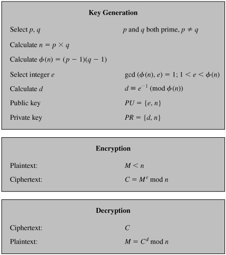
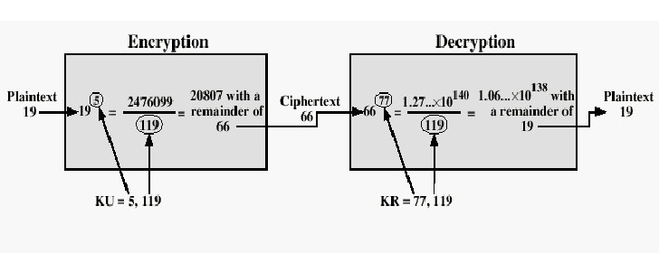

Welcome back.
It's time to discuss the revolutionary encryption technique RSA - one of the first practical public key cryptography algorithm rooted in Math (and number theory), which is still used widely in encrypted symmetric key exchanges in SSL/TLS sessions, digital signatures and other hybrid encryption schemes.
Let's see the algorithm in detail.
Note: The following is a very-easy-to-understand article from Serge Matovic's webpage (2003) titled: "The RSA Algorithm Explained Using Simple Pencil and Paper Method".
OK, here is what we want to do: We have a "piece of data" that we want to somehow "scramble" so nobody can learn what this data is, and we want to send this data over unsecure lines to the recipient. Upon receipt of this scrambled data, the recipient must be able to "unscramble" this data to its original shape. The important thing here is that we want to do this "scrambling/unscrambling" process without requiring usage of any secret keys that both the sender and the recipient must posses in order to scramble and descramble the data. This is why the method we are going to discuss here is called "Public Key Cryptography". There are several Public Key Cryptography algorithms in use today. The most popular is called RSA algorithm, and is named after the initials of its inventors: R for Rivest, S for Shamir, and A for Adelman. By the way, they were students when they invented this algorithm in 1977. This is their picture at the time.
So here is the summary of operations. Please continue reading below for the detailed explanation of how this is achieved. Let's say that your WEB Browser has a piece of data, say number 14 (we'll call it a Plain message and label it as P=14). and it wants to encrypt this Plain message first and then send it to the Server. Upon receipt of this encrypted message, the Server wants to decrypt it to its original value. Here is the summary of what transpires. Before any communication happens, the Server had calculated, in advance, its public (n =33 and k=7) and private (j=3) keys. Now, to initiate the transaction, the Browser sends this message to the server: Hey Server, please send me your public key. The Server obliges: Here it comes, it's n=33, k=7. After receiving the Server's public key, the Browser converts the Plain message P=14 into the Encrypted message E=20 and sends it to the Server. The Server receives this encrypted message E=20 and using its secret key j=3 (and publicly known key n=33) decrypts the E=20 message into its original Plain message P=14.
Now, let's look a bit more into the math behind all this.
Section1. Generating Public and Private Keys
First, as we mentioned above, before any transmission happens, the Server had calculated its public and secret keys. Here is how.
1.1) pick two prime numbers, we'll pick p = 3 and q = 11
1.2) calculate n = p * q = 3 * 11 = 33
1.3) calculate z = ( p - 1 ) * ( q - 1 ) = ( 3 - 1 ) * ( 11 - 1 ) = 20
1.4) choose a prime number k, such that k is co-prime to z, i.e, z is not divisible by k. We have several choices for k: 7, 11, 13, 17, 19 (we cannot use 5, because 20 is divisible by 5). Let's pick k=7 (smaller k, "less math").
1.5) So, the numbers n = 33 and k = 7 become the Server's public key.
1.6) Now, still done in advance of any transmission, the Server has to calculate it's secret key. Here is how.
1.7) k * j = 1 ( mod z )
1.8) 7 * j = 1 ( mod 20 )
1.9) ( 7 * j ) / 20 = ? with the remainder of 1 (the "?" here means: "something, but don't wory about it"; we are only interested in the remainder). Since we selected (on purpose) to work with small numbers, we can easily conclude that 21 / 20 gives "something" with the remainder of 1. So, 7 * j = 21, and j = 3. This is our secret key. We MUST NOT give this key away.
Now, after the Server has done the above preparatory calculations in advance, we can begin our message transmission from our Browser to the Server. First, the Browser requests from the Server, the Server's public key, which the Server obliges, i.e., it sends n=33 and k=7 back to the Browser. Now, we said that the Browser has a Plain message P=14, and it wants to encrypt it, before sending it to the Server. Here is how the encryption happens on the Browser.
Section 2. Encrypting the message
Here is the encryption math that Browser executes.
2.1) P ^ k = E ( mod n )
"^" means "to the power of"
P is the Plain message we want to encrypt
n and k are Server's public key (see Section 1)
E is our Encrypted message we want to generate
After plugging in the values, this equation is solved as follows:
2.2) 14 ^ 7 = E ( mod 33 )
This equation in English says: raise 14 to the power of 7, divide this by 33, giving the remainder of E.
2.3) 105413504 / 33 = 3194348.606 (well, I lied when I said that this is "Pencil and Paper" method only. You might want to use a calculator here).
2.4) 3194348 * 33 = 10541348
2.5) E = 105413504 - 10541348 = 20
So, our Encrypted message is E=20. This is now the value that the Browser is going to send to the Server. When the Server receives this message, it then proceeds to Decrypt it, as follows.
Section 3. Decrypting the Message
Here is the decryption math the Server executes to recover the original Plain text message which the Browser started with.
3.1) E ^ j = P ( mod n)
E is the Encrypted message just received
j is the Server's secret key
P is the Plain message we are trying to recover
n is Server's public key (well part of; remember that Server's public key was calculated in Section 1 as consisting of two numbers: n=33 and k=7).
After plugging in the values:
3.2) 20 ^ 3 = P ( mod 33 )
3.3) 8000 / 33 = ? with the remainder of P. So to calculate this remainder, we do:
3.4) 8000 / 33 = 242.424242...
3.5) 242 * 33 = 7986
3.6) P = 8000 - 7986 = 14, which is exactly the Plain text message that the Browser started with!
Well that's about it. While we did not discuss the theory behind the formulae involved I hope that you got at least a basic idea of how the public key cryptography using the RSA algorithm works.
Two diagrams below represent the process/algorithm:

Example:

Section 4. "Cracking the Code"
The essential requirement of the Public Key Cryptography is that the public and secret keys are mathematically related, but this relationship must be made very hard to determine by an outsider. As you saw in the preceding text, everything starts with p and q, from which we calculated n. The public key consists of two numbers: n and k, where k is calculated from z and z is calculated from p and q. The secret key j, was calculated from k and z and, as we just stated, k and z are calculated from p and q. It follows then, that j is also calculated from p and q,which proves that the public and private keys are mathematically related. So, if an outsider wanted to find the secret key j, by only knowing n, he must break down n into the two prime numbers that were used to produce it (remember that n = p * q). Now, here is the real crux of the bisquit: Decomposing a very large n into p and q is really difficult to do. It is easy with the small numbers that we have used in our demonstration, but try, for example decomposing p into p and q when p has several hundred digits. Really, really difficult.
If Prime numbers, as big as 1024 bits in binary are used (will be called RSA-2048 in that case), then it will take even the modern 4GHz quad core processors more than the lifetime of the universe, to crack/decompose the primes back! (as of 2016)
Note 1: Using the 'Tool' for generating large-bit prime numbers can freeze the web browser for some time.
Note 2: In the 'Tool', only available options for 'Public Exponents' are 3, 5, 17, 257, 65537. Reason?
These primes are not random, they are Fermat primes; the primes of the form: 2^n + 1. The good thing about this is that they all in binary, would be simply something like 100.....001 (such binary number means faster calculation in computer). Eg, (binaries): 3 = 11, 5 = 101, 17 = 10001, 257 = 100000001, and 65537 = 10000000000000001.
That was the reason.
Note 3: In the 'Tool', the conversion from String to number is done by using the encoding scheme called Base95. The 95 characters include almost all of the 'printable' characters (that can be typed from the keyboard), and are given
in below.
0 0
1 1
2 2
3 3
4 4
5 5
6 6
7 7
8 8
9 9
10 A
11 B
12 C
13 D
14 E
15 F
16 G
17 H
18 I
19 J
20 K
21 L
22 M
23 N
24 O
25 P
26 Q
27 R
28 S
29 T
30 U
31 V
32 W
33 X
34 Y
35 Z
36 a
37 b
38 c
39 d
40 e
41 f
42 g
43 h
44 i
45 j
46 k
47 l
48 m
49 n
50 o
51 p
52 q
53 r
54 s
55 t
56 u
57 v
58 w
59 x
60 y
61 z
62 _
63 =
64 !
65 @
66 #
67 $
68 %
69 ^
70 &
71 *
72 (
73 )
74 [
75 ]
76 {
77 }
78 |
79 ;
80 :
81 ,
82 .
83 <
84 >
85 /
86 ?
87 `
88 ~
89
90 \
91 '
92 "
93 +
94 -
95 10
The RSA is named and credited to the three students : Rivest, Shamir and Adleman of MIT, who first publicly described the algorithm in 1977; but a British Mathematician and Cryptographer Clifford Cocks had already developed it independently in 1973, while working at the GCHQ (United Kingdom Government Communications Headquarters). GCHQ was not able to find any immediate use of his algorithm, and treated it as classified information, for next 24 years!
In 1987, the GCHQ had plans to release his work, but Peter Wright's Spycatcher MI5 memoir caused them to delay the revelation of this research further for 10 years. 24 years after its discovery, on 18 December 1997, Cocks revealed of the GCHQ History of public-key research in a public talk.
"Secrets live and die.
We always think we know a lot, but mystery is always High.
No matter how hard we try, Secrets live and die!"
So, this was Public Key Cryptography algorithm called RSA. And this is where we end our discussions on encryption-decryption techniques.
Next we will lastly see the concept of a one-way function called Hash.
Bye till then.
:-)
Post-21 Ended.